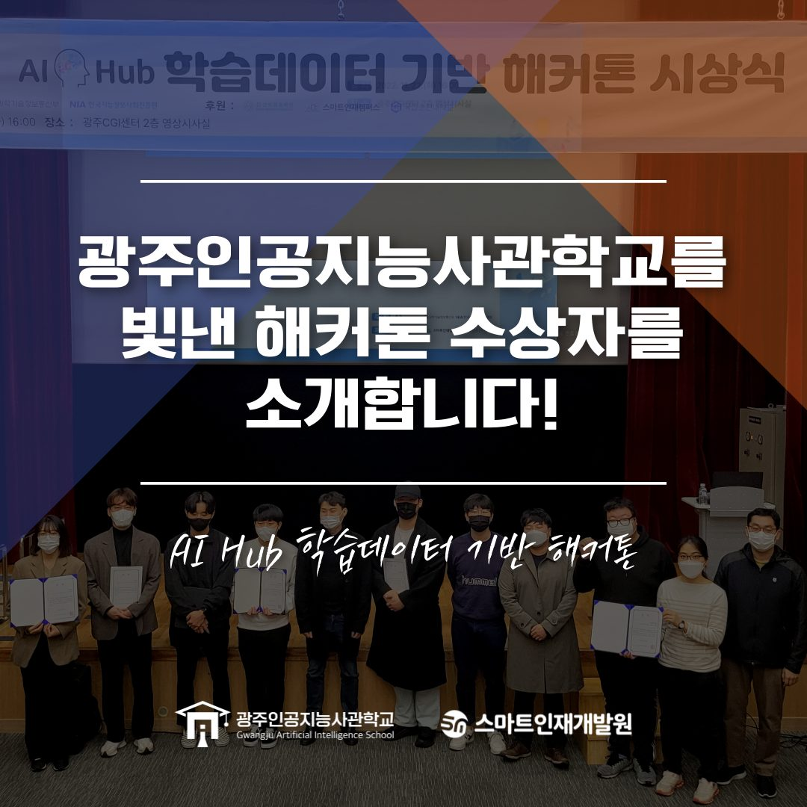
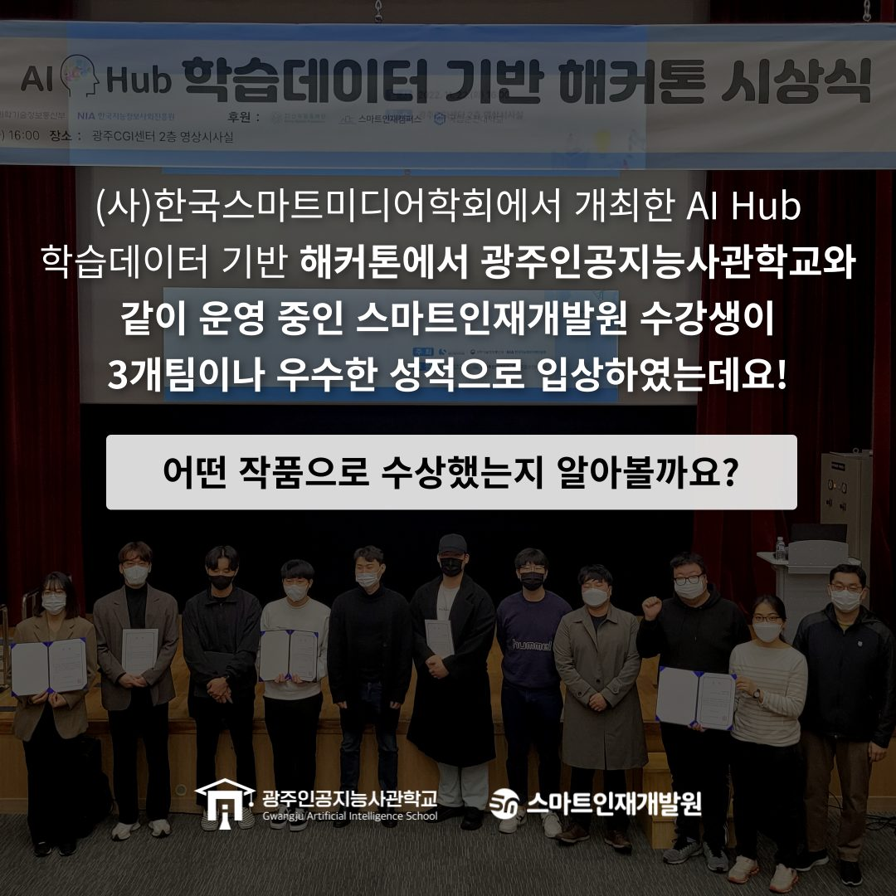
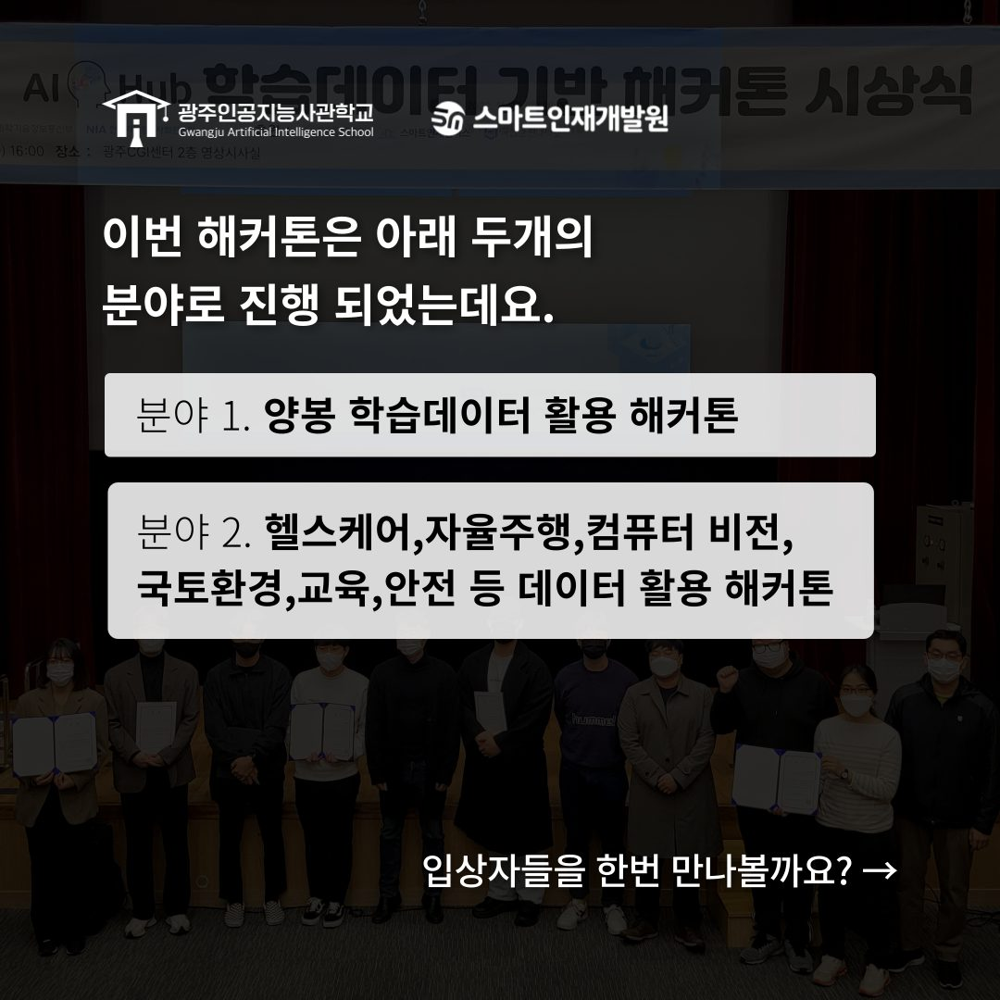
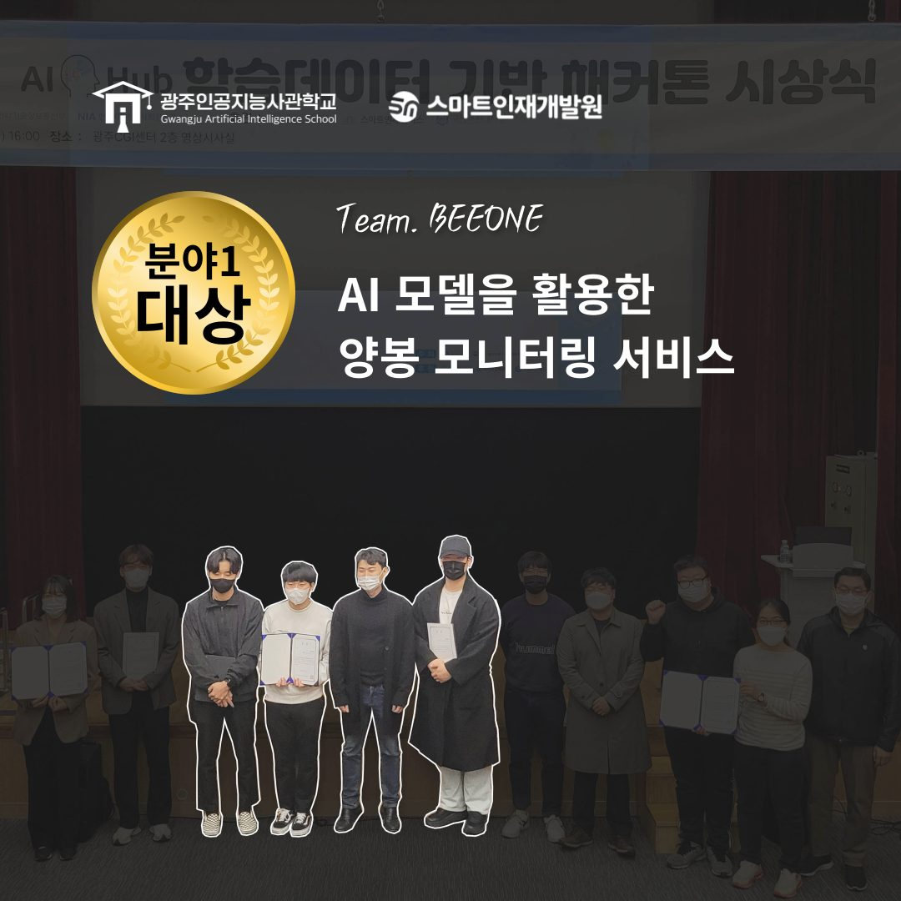
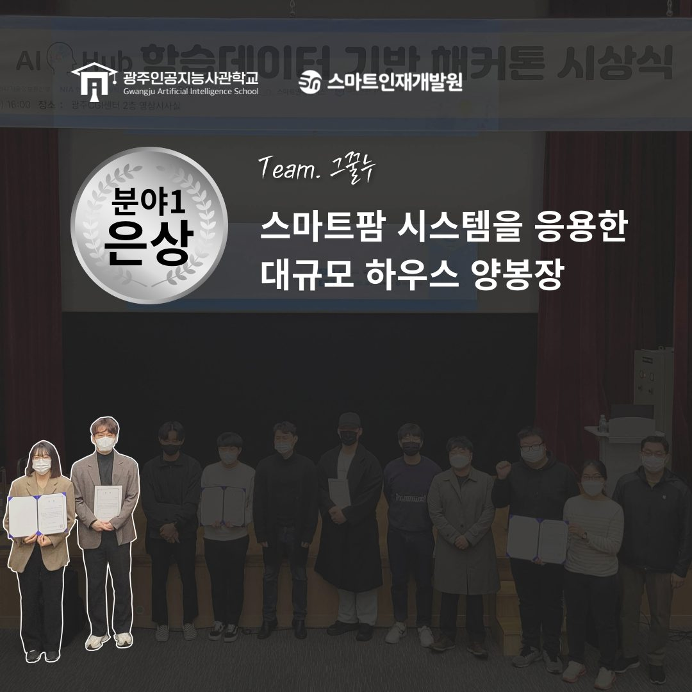
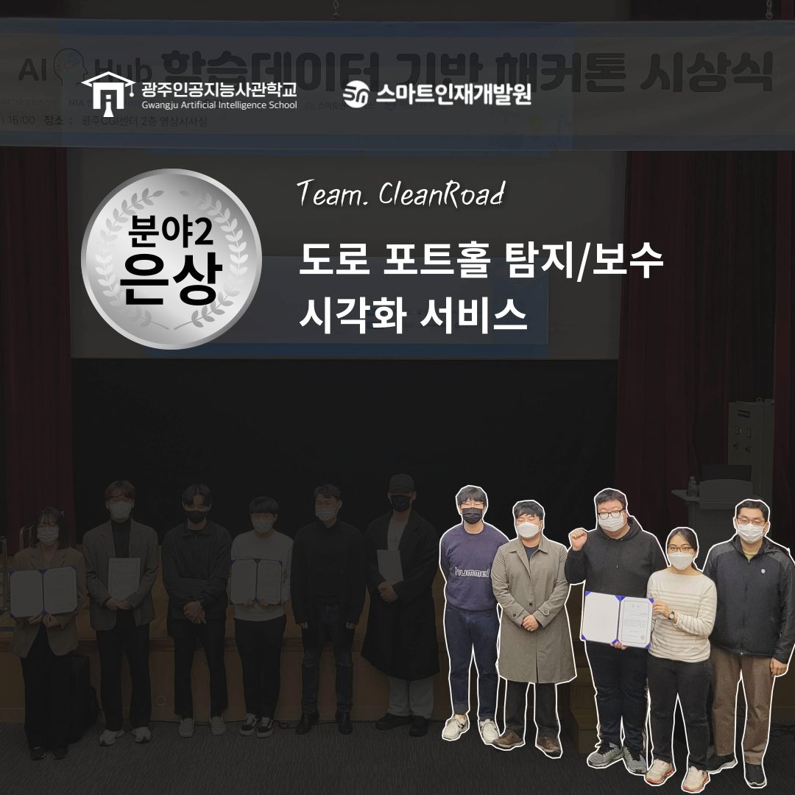

🎊 AI Hub 학습데이터 기반 해커톤 입상 🎊
안녕하세요~ 광주인공지능사관학교입니다! 오늘은 아주 기분 좋은 소식을 하나 가져왔어요.
바로 공모전 입상 소식입니다.

어떤 공모전인지부터 말씀 드리자면, AI Hub 학습데이터를 기반으로 한 해커톤이었는데요 이번 공모전에서는 광주인공지능사관학교 두 개 팀뿐만 아니라 함께 운영하고 있는 스마트인재개발원의 한 팀까지 총 세 개 팀이 입상을 하였답니다.


분야1
양봉 학습데이터 활용 해커톤
분야2
헬스케어, 자율주행, 컴퓨터 비전, 국토환경,
교육, 안전 등 데이터 활용 해커톤
 그럼 각 분야에서 어떤 상을 수상했는지
자세히 살펴보도록 할까요?
그럼 각 분야에서 어떤 상을 수상했는지
자세히 살펴보도록 할까요?

먼저 첫번째 분야에서 무려 대상을 수상한 팀 BEEONE입니다. 주제는 AI 모델을 활용한 양봉 모니터링 서비스라고 하네요.
다음으로 스마트팜 시스템을 응용한 대규모 하우스 양봉장을 주제로 참가한 팀 그꿀누인데요. 분야1에서 은상을 수상하였고 광주인공지능사관학교에서 함께 운영중인 스마트인재개발원 수강생들입니다!
마지막으로 팀 CleanRoad는 스마트폰 카메라를 활용한 도로 포트홀, 크랙 탐지 및 보수 우선순위 시각화 서비스를 주제로 분야2에서 은상을 수상하였습니다! 열심히 준비한 만큼 값진 결과를 얻어낸
우리 교육생들 모두 축하합니다.
공모전도 역시 광주인공지능사관학교!
열심히 준비한 만큼 값진 결과를 얻어낸
우리 교육생들 모두 축하합니다.
공모전도 역시 광주인공지능사관학교!